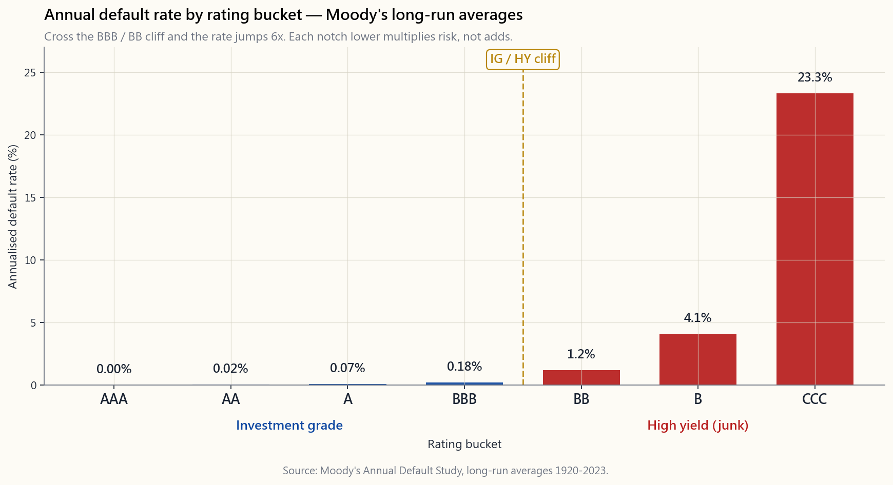
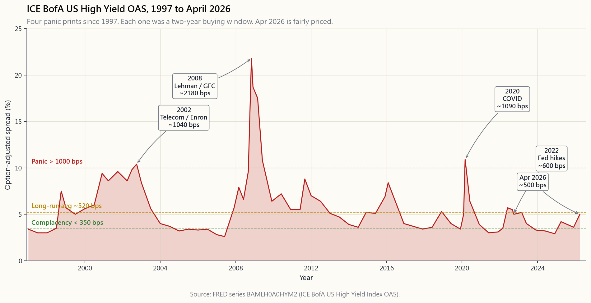

Week 33: Credit Analysis — Investment Grade, High Yield, and the Spread
1. Why This Is Important
Week 5 introduced the bond contract and the price-yield curve. Week 8 looked at the income statement that funds the coupons. This week we put those two together and ask the only question that matters in corporate credit: **will the borrower actually pay you back, and what is fair compensation for the chance that they won't?**
Credit is the part of fixed income where the math stops being arithmetic and starts being probability. A 10-year Treasury at 4.4% is — in nominal dollars — a riskless cash flow. A 10-year BB-rated bond at 4.4% + 320 bps = 7.6% is a distribution of cash flows, where the right tail is "you collect every coupon and your face back" and the left tail is "the issuer files Chapter 11 in year 4 and you recover 40 cents on the dollar in restructuring." The 320 bps spread is the market's price for that distribution.
Four reasons this lesson earns its place.
headlines (the VIX), but the high-yield option-adjusted spread —
BAMLH0A0HYM2 on FRED — is arguably a better leading indicator. It blew
through 2,000 bps in November 2008, well before equities bottomed in March 2009. It hit 1,100 bps in March 2020, days before the equity low. The volatility tail wags the dog: when the credit tail is screaming, the equity dog is about to follow.
cliff.** A bond rated BBB- is held by every pension fund, mutual fund, and insurance company on earth, often by mandate. Cut it one notch to BB+ and a wave of forced sellers hits. The rating-agency boundary (Baa3/BBB-) is the most important price discontinuity in fixed income.
alpha sources — information, structure, time horizon, illiquidity, and behavioural — all show up here. HY bonds compensate you for all five — under-researched, structurally avoided by IG-only mandates, illiquid through stress, and behaviourally dumped at the worst time. Buying HY at 1,000 bps is one of the few asymmetric trades a retail investor can find without leverage.
its bond sleeve sits on the rating curve.** Most "core bond" funds (AGG, BND) are 100% IG. Most "income" funds (HYG, JNK) are 100% HY. The risk profile of those two sleeves under a recession is not even close. Confusing them — buying yield without seeing the rating — is how retirees blow up in year 1.
2. What You Need to Know
2.1 The Rating Ladder
Three agencies — Moody's, S&P, and Fitch — publish letter ratings that slot every issuer into one of about twenty buckets. The buckets that matter for a US investor are:
| Tier | S&P / Fitch | Moody's | Plain-English meaning |
|---|---|---|---|
| Investment grade | AAA, AA, A, BBB | Aaa, Aa, A, Baa | Default unlikely in normal times. Pension-fund eligible. |
| High yield ("junk") | BB, B, CCC | Ba, B, Caa | Default is a real probability. Speculative. |
| Distressed | CC, C, D | Ca, C, D | Default imminent or already happened. |
The line between BBB- and BB+ is the **investment-grade / high-yield divide**. Index providers and most regulated investors treat that line as a binary cliff. A Friday-afternoon downgrade across that line can blow out a bond's spread by 100-300 bps in a single session — not because the business changed but because the holder base has to change.
For the rest of the lesson we collapse the ladder to seven buckets (AAA, AA, A, BBB, BB, B, CCC) — the granularity that actually shows up in default statistics.
2.2 What the Rating Predicts: Annual Default Rates
Moody's publishes an annual study of historical default rates by rating bucket, going back to 1920. The long-run averages are striking:

A AAA-rated bond defaults roughly never in any one year. A BBB-rated bond — the lowest IG bucket — defaults at about 0.18% per year, less than one in five hundred. Cross the cliff into BB and the rate jumps to about 1.16%, then to 4.1% at single-B, and to 23.3% at CCC. **The progression is non-linear** — each notch down doesn't just add risk, it multiplies it.
Three caveats. First, these are long-run averages. In a recession year, BB defaults can hit 4-6% and CCC can hit 35-45%. Tails dominate. Second, the averages assume cycles repeat — they include 1932 and 2008. Use them as a base rate, not a forecast. Third, default ≠ total loss. Recovery is the second leg.
2.3 Recovery Rates and Expected Loss
When an issuer defaults, bondholders don't go to zero. They go through restructuring (Chapter 11 in the US) and recover some fraction of par based on seniority in the capital stack:
- Secured debt: ~65-70% recovery
- Senior unsecured: ~38-42% recovery (the canonical "40%")
- Subordinated: ~25-30% recovery
- Preferred / equity: 0-10% recovery
$$ EL = PD \times LGD = PD \times (1 - R) $$
where $PD$ is annualised default probability and $R$ is recovery rate. For a senior unsecured single-B bond:
$$ EL = 4.1\% \times (1 - 40\%) = 4.1\% \times 0.60 = 2.46\% \text{ per year}. $$
That 2.46% is the credit-loss tax on the bond's stated yield. If the B-rated bond yields Treasury + 425 bps, the expected excess return is 425 - 246 = 179 bps. The remaining 179 bps is the liquidity premium plus the risk premium — your compensation for bearing the default distribution rather than just paying out its mean.
2.4 The Anatomy of a Spread
Putting it together, the spread of a corporate bond over a maturity-matched Treasury decomposes into three components:
$$ \text{Spread} = \underbrace{PD \cdot (1-R)}_{\text{expected loss}} + \underbrace{\pi_{\text{liq}}}_{\text{liquidity}} + \underbrace{\pi_{\text{risk}}}_{\text{risk premium}}. $$
For investment grade, expected loss is tiny (<10 bps for AA, ~30 bps for BBB) and the bulk of the spread is liquidity + risk premium. A BBB bond trading at 130 bps over Treasuries is paying you ~25 bps of expected-loss compensation and ~105 bps of "I had to hold this through 2008 without forced selling" premium.
For high yield, the expected-loss component is the majority of the spread in normal times. A B-rated bond at 425 bps is split roughly 250 bps loss / 175 bps premium. In recessions the proportions invert: the spread blows out to 800-1,500 bps but the realised loss only doubles, so the risk premium dominates and forward returns are spectacular for those buying the panic.
2.5 The BAA and HY Series: Reading the Tape
Two FRED series give you a real-time read on the credit cycle:
BAA10Y— the spread of Moody's BAA (lowest IG) corporate yield over
BAMLH0A0HYM2— the ICE BofA US High Yield Index option-adjusted
Below is the high-yield series since 1997. Notice the four spike events:

- 2002, ~1,000 bps. Telecom and accounting-fraud collapse (WorldCom,
- 2008, ~2,180 bps at the November peak. Lehman, money-market freeze,
- 2020, ~1,100 bps in mid-March. COVID lockdowns; spreads round-tripped
- 2022 Q4, ~600 bps. The fastest Fed hiking cycle in 40 years dragged
Apr 2026 reading: HY OAS is back near its long-run average — neither the 1,000-bps "buy with both hands" tape of 2020 nor the 350-bps "reach for yield" tape of 2007 or 2021. A boring, fairly-priced credit market.
2.6 What This Means for the Retail Investor
Three practical takeaways.
you're being paid less than the historical expected loss for B-rated paper. The barbell answer: when HY is rich, the right move is Treasuries on one side and equity beta on the other, not stretching for 50 bps in junk.
since 1997 has been a 2-year buying opportunity. Behavioural alpha is real; HY-at-panic is the cleanest expression of it that doesn't require options or shorting.
binary; on an index of 1,500 of them it's a smooth statistical process. HYG and JNK are the canonical high-yield ETFs; LQD is the canonical IG ETF. Stick to US-listed instruments — those are the ones a retail investor can actually use.
The interactive lets you turn each of the levers — maturity, coupon, Treasury yield, spread, default probability, recovery rate — and watch implied price, credit-adjusted YTM, expected return, and breakeven default rate move. Try the 2008 preset: 10y, 6% coupon, 4% Treasury, 1,800 bps spread, 6% PD, 40% recovery. The expected return is still +9% per year. That's what panic looks like in the math.
Open the interactive credit pricer →
3. Common Misconceptions
not 100%. Lehman was A-rated 18 months before it went to zero. IG protects you against default frequency, not default severity.
delivered ~200-300 bps per year over Treasuries net of defaults. Not spectacular, but real, and uncorrelated to the equity premium in a useful way.
BB is in none of them. The cliff is institutional, not credit-fundamental, but it dictates the trading dynamics.
Sometimes that's a recession (2008), sometimes a sector blow-up (2002), sometimes a vol shock (March 2020). Treat them as stress indicators, not GDP forecasts.
~25% in 2008-2009 (too many bonds in restructuring at once) and ~55% in 2003-2007 (light default flow, recoveries clear faster).
expected-loss tax, a CCC bond at 1,500 bps over Treasuries may have a lower expected return than a BB at 350 bps — because the 25% PD eats more than the spread compensates.
is not credit risk. 2022 Treasuries lost 17% in price terms. The risks are different but neither is zero.
usually do — but holders who sell at the panic print do not. The market can stay irrational longer than you can stay solvent — size your HY position for the path, not the endpoint.
4. Q&A
Q1. What's the difference between a credit spread and a yield spread? A. They're the same number expressed two ways. "Spread" usually means the bond's option-adjusted yield minus the matched-maturity Treasury, quoted in basis points. "Yield spread" sometimes means the difference between two corporate yields (e.g., HY minus IG). Read the legend.
**Q2. Why does the BAA spread bottom around 150 bps even when defaults are zero?** A. Liquidity premium and risk premium don't go to zero. Even a perfectly safe corporate has to compensate you for being less liquid than a Treasury and for the fact you can't refinance it instantly. 150 bps is roughly the floor across cycles since 1980.
Q3. Should I prefer individual bonds or a bond ETF? A. For Treasuries it doesn't matter much (no credit risk, deep liquidity). For corporates, retail investors should use an ETF. Single bonds have wide bid-ask, lumpy default risk, and a knowledge edge that favours the dealer. Alpha is rare — single-name credit alpha is one of the rarest forms.
Q4. What's the biggest risk holding HYG through a recession? A. Forced selling at the spread peak. The fund itself is fine (it can hold defaulted bonds through restructuring), but if you panic-sell at 1,500 bps wide, you crystallise the loss before the recovery. Size for the tape, not the average.
Q5. Are credit ratings reliable? A. Reasonably, with three caveats. (1) They lag — rating changes follow market spreads, not lead them. (2) Structured products were mis-rated in
corporates, the rating is a useful starting point.
Q6. What does "fallen angel" mean? A. A bond that was IG at issue and got downgraded to HY. The interesting thing is the technical cliff: the IG-only fund universe must sell it, the HY universe is just absorbing it. Spreads usually overshoot on the way down — there's a structural alpha source here for patient buyers.
Q7. How do I decompose a 320-bps spread? A. Look up the rating bucket's annualised default rate (e.g., BB ~1.2%), multiply by (1 - 40%) for senior unsecured = 72 bps of expected loss. The remaining 248 bps is liquidity + risk premium. If the bond is secured, expected loss is ~36 bps and the premium grows.
Q8. Why are HY spreads measured option-adjusted? A. Most HY bonds are callable. The issuer's call option reduces what the holder will earn if rates fall, so a naive yield-to-maturity overstates expected return. Option-adjusted spread (OAS) strips the call option's value out so you can compare bonds on a like-for-like basis. Both
BAMLH0A0HYM2 and modern IG indices are quoted OAS.
Q9. What's the right HY weight in a portfolio? A. Think of the portfolio as four tranches. HY belongs in the "yield" tranche alongside BBB IG, REITs, and option-income strategies — not in the Treasury sleeve. A 5-15% HY weight is reasonable for a moderate portfolio; size up only when spreads are above 800 bps.
Q10. Did 2022's HY drawdown follow the script? A. No. Spreads only widened to ~600 bps but rates rose 4%, so duration and spread losses compounded. Realised default losses stayed near long-run averages (~3% in 2023). The lesson: HY is short rate duration too — the 2022 tape isolated the rate leg from the credit leg in a way the textbook doesn't always emphasise.
Q11. Are leveraged loans a substitute for HY? A. Similar credit risk (mostly B-rated borrowers), but floating-rate coupons. They've outperformed when rates rose (2022) and underperformed when rates fell (2020 Q1). Different rate-duration profile, same credit-duration profile. BKLN is the retail vehicle.
**Q12. When credit spreads tighten and equity vol rises, what does that mean?** A. Usually a bullish signal in disguise. Credit leads equity vol — if HY is unfazed, the equity vol shock is probably positioning, not fundamentals. The opposite divergence (credit widening, equity calm) is the red flag — that was July 2007 in real time.
第33週：信用分析——投資級、高收益與利差
1. 為什麼這個話題重要
第5週介紹了債券合約與價格-收益率曲線。第8週研究了為票息提供資金的損益表。本週我們將兩者結合，並提出公司信用領域唯一真正重要的問題：借款人究竟會不會還錢，而承擔其違約風險的合理補償是多少？
信用是固定收益領域中數學從算術轉向概率的部分。以4.4%持有的10年期國債，以名義美元計算，是一筆無風險現金流。一隻10年期BB評級債券，以4.4% + 320個基點 = 7.6%的收益率計算，卻是一個現金流的分佈——右尾是「每一期票息和本金悉數收回」，左尾是「發行人在第4年申請破產重組，重組後每元只回收40仙」。320個基點的利差，就是市場為這個分佈所定的價格。
以下四點說明本課的意義所在。
BAMLH0A0HYM2——可以說是更好的領先指標。它在2008年11月突破2,000個基點，遠早於股市在2009年3月觸底。它在2020年3月達到1,100個基點，正好是股市低點的前幾天。波動率的尾部牽著狗——當信用尾部在哀嚎，股票這條狗很快也要跟上。2. 你需要掌握的內容
2.1 評級階梯
三家機構——穆迪、標普和惠譽——發布字母評級，將每個發行人劃入約二十個類別之一。對美國投資者而言，真正重要的類別如下：
| 層級 | 標普／惠譽 | 穆迪 | 通俗含義 |
|---|---|---|---|
| 投資級 | AAA、AA、A、BBB | Aaa、Aa、A、Baa | 正常情況下違約可能性極低。符合退休基金持有資格。 |
| 高收益（「垃圾」） | BB、B、CCC | Ba、B、Caa | 違約是真實的概率。屬投機性質。 |
| 困境級 | CC、C、D | Ca、C、D | 違約迫在眉睫或已經發生。 |
BBB-與BB+之間的界線，就是投資級與高收益的分水嶺。指數供應商和大多數受監管的投資者將這條線視為二元斷崖。一次在周五下午發生的跨線降級，可以在單一交易時段內令一隻債券的利差飆升100至300個基點——並非因為業務有所改變，而是因為持有人基礎必須改變。
在本課其餘部分，我們將評級階梯簡化為七個類別（AAA、AA、A、BBB、BB、B、CCC）——這正是違約統計數據中實際呈現的粒度。
2.2 評級所預測的內容：年度違約率
穆迪每年發布一份按評級類別劃分的歷史違約率研究報告，追溯至1920年。長期平均值頗為驚人：
AAA評級債券在任何一年的違約率基本上為零。BBB評級債券——最低的投資級類別——每年違約率約為0.18%，即不到五百分之一。一旦跨越斷崖進入BB，違約率便跳升至約1.16%，單B則升至4.1%，CCC更高達23.3%。這一遞進是非線性的——每往下一個評級並非只是疊加風險，而是成倍放大風險。
有三點需要注意。第一，這些是長期平均值。在經濟衰退年份，BB違約率可達4%-6%，CCC可達35%-45%。尾部效應主導一切。第二，這些平均值假設週期重複——其中包含了1932年和2008年的數據。以此作為基準利率，而非預測。第三，違約≠全部損失。回收率是第二個關鍵因素。
2.3 回收率與預期損失
當發行人違約時，債券持有人並非血本無歸。他們會經歷重組（美國的第11章破產保護），並根據資本結構中的優先順序回收部分本金：
- 有擔保債務：約65%-70%回收率
- 優先無擔保債務：約38%-42%回收率（即典型的「40%」）
- 次級債務：約25%-30%回收率
- 優先股／股票：0%-10%回收率
$$ EL = PD \times LGD = PD \times (1 - R) $$
其中$PD$為年化違約概率，$R$為回收率。對於優先無擔保的單B評級債券：
$$ EL = 4.1\% \times (1 - 40\%) = 4.1\% \times 0.60 = 2.46\%\ \text{（每年）}。 $$
這2.46%是債券名義收益率所需承擔的信用損失稅。若B評級債券的收益率為國債+425個基點，則預期超額回報為425 - 246 = 179個基點。餘下的179個基點是流動性溢價加風險溢價——是你承擔違約分佈而非僅支付其均值所獲得的補償。
2.4 利差的構成
綜合以上分析，公司債券相對於相同到期日國債的利差可分解為三個組成部分：
$$ \text{利差} = \underbrace{PD \cdot (1-R)}_{\text{預期損失}} + \underbrace{\pi_{\text{流動性}}}_{\text{流動性溢價}} + \underbrace{\pi_{\text{風險}}}_{\text{風險溢價}}。 $$
對於投資級債券，預期損失極小（AA不到10個基點，BBB約30個基點），利差的大部分是流動性加風險溢價。一隻BBB債券在國債基礎上交易於130個基點，是在向你支付約25個基點的預期損失補償，以及約105個基點的「我必須在2008年不被強制賣出的情況下持有這隻債券」的溢價。
對於高收益債券，預期損失部分在正常時期佔利差的大多數。一隻B評級債券在425個基點的利差下，大致分拆為250個基點的損失與175個基點的溢價。在經濟衰退時期，比例則反轉：利差擴大至800至1,500個基點，但實際損失只是翻倍，因此風險溢價佔主導，對於在恐慌中買入的人而言，前瞻回報相當可觀。
2.5 BAA和高收益系列：讀懂市場訊號
兩個FRED系列讓你實時掌握信用週期動態：
BAA10Y——穆迪BAA（最低投資級）公司債收益率相對10年期國債的利差。長期平均值約190個基點。低於150個基點為「信用自滿」；高於350個基點為衰退定價。BAMLH0A0HYM2——ICE美銀美國高收益指數期權調整利差。長期平均值約520個基點。低於350個基點為「追逐收益率」；高於1,000個基點為真正的恐慌。
- 2002年，約1,000個基點。電信和財務造假危機（世界通訊、安然）。高收益債券在1998年至2001年間大量向電信和能源行業發行；崩盤迫使市場按真實價值重新定價。
- 2008年，11月峰值約2,180個基點。雷曼兄弟破產、貨幣市場凍結、風險資產無人問津。本系列的歷史最高點。
- 2020年，3月中旬約1,100個基點。新冠疫情封鎖；利差在90天內完全收復，因為美聯儲宣佈將買入投資級和高收益交易所買賣基金。
- 2022年第四季，約600個基點。40年來最快的美聯儲加息週期，令高收益存續期損失與利差擴大同時發生——罕見的「利率和信用同步下跌」局面。
2.6 對散戶投資者的啟示
三點實際要點。
互動工具讓你調整每個槓桿——到期日、票息、國債收益率、利差、違約概率、回收率——並實時觀察隱含價格、信用調整後到期收益率、預期回報和損益平衡違約率的變化。試試2008年的預設情景：10年期、6%票息、4%國債、1,800個基點利差、6%違約概率、40%回收率。預期回報仍達每年+9%。這就是恐慌在數學上的面目。
3. 常見誤解
4. 問答環節
問題1：信用利差與收益率利差有什麼區別？ 答：兩者是同一個數字的不同表達方式。「利差」通常指債券的期權調整收益率減去相同到期日的國債收益率，以基點報價。「收益率利差」有時指兩個公司債收益率之間的差值（例如高收益減投資級）。閱讀時留意圖例說明。
問題2：為什麼BAA利差即使在違約率為零時也在150個基點附近觸底？ 答：流動性溢價和風險溢價不會降至零。即使是一隻絕對安全的公司債，也必須向你補償其流動性不及國債的溢價，以及你無法即時再融資的現實。150個基點大致是1980年以來跨越週期的底部水平。
問題3：我應該偏好個別債券還是債券交易所買賣基金？ 答：對於國債，差別不大（無信用風險，流動性充裕）。對於公司債，散戶投資者應使用交易所買賣基金。個別債券的買賣差價寬、違約風險集中，而且信息優勢有利於交易商。阿爾法機會稀少——個別名稱的信用阿爾法是最稀缺的形式之一。
問題4：在經濟衰退期間持有HYG的最大風險是什麼？ 答：在利差峰值時被迫賣出。基金本身運作正常（它可以持有違約債券直至重組完成），但如果你在1,500個基點的寬幅時恐慌性賣出，就會在回升之前實現損失。根據市場環境而非平均值來確定倉位規模。
問題5：信用評級可靠嗎？ 答：整體尚算可靠，但有三點注意事項。（1）評級具有滯後性——評級變動跟隨市場利差，而非領先。（2）2007年的結構性產品評級存在嚴重錯誤。（3）主權評級存在政治偏見。對於普通美國公司債，評級是一個有用的起點。
問題6：「墮落天使」是什麼意思？ 答：指發行時為投資級但其後被降級至高收益的債券。有趣之處在於技術性斷崖：僅限投資級授權的基金宇宙必須賣出，而高收益宇宙正在靜靜吸納。在下行過程中，利差通常會過度調整——這對有耐心的買家而言是一個結構性阿爾法來源。
問題7：如何分解320個基點的利差？ 答：查找評級類別的年化違約率（例如BB約1.2%），乘以(1 - 40%)用於優先無擔保債券 = 72個基點的預期損失。餘下的248個基點是流動性加風險溢價。若債券有擔保，預期損失約為36個基點，溢價則相應增加。
問題8：為什麼高收益利差以期權調整方式計算？
答：大多數高收益債券是可贖回債券。在利率下降時，發行人的贖回期權會減少持有人的收益，因此單純的到期收益率會高估預期回報。期權調整利差（OAS）剔除贖回期權的價值，使你能夠在同等基礎上比較不同債券。BAMLH0A0HYM2和現代投資級指數均以期權調整利差報價。
問題9：投資組合中高收益的合適比重是多少？ 答：將投資組合視為四個層次。高收益屬於「收益型」層次，與BBB投資級、房地產信託基金和期權收益策略並列——而非國債組合。對於中等風險的投資組合，5%至15%的高收益比重是合理的；僅在利差高於800個基點時才加碼。
問題10：2022年的高收益回撤是否符合預期劇本？ 答：並不完全符合。利差僅擴大至約600個基點，但利率上升4%，令存續期損失與利差損失同時疊加。實際違約損失維持在長期平均水平附近（2023年約3%）。教訓在於：高收益的利率存續期也偏短——2022年的走勢將利率因素與信用因素分離，以一種教科書有時未必強調的方式。
問題11：槓桿貸款能否替代高收益？ 答：信用風險相近（主要是B評級借款人），但票息是浮動利率。在利率上升時表現優於高收益（2022年），在利率下降時則遜於高收益（2020年第一季）。利率存續期不同，信用存續期相同。BKLN是散戶可用的工具。
問題12：當信用利差收窄而股票波動性上升，這意味著什麼？ 答：通常是一個偽裝成利好的信號。信用領先於股票波動性——如果高收益不為所動，股票的波動性衝擊可能只是倉位調整，而非基本面問題。相反的背離（信用擴大、股票平靜）才是紅旗——這正是2007年7月實時發生的情況。
第33週：信用分析——投資等級、高收益與利差
1. 為什麼這個主題很重要
第5週介紹了債券契約與價格-殖利率曲線，第8週探討了支應票面利率的損益表。本週我們將兩者合而為一，並提出公司信用領域中唯一真正重要的問題：借款人真的會還錢嗎？萬一他們不還，合理的風險補償又是多少？
信用是固定收益領域中數學從算術演變為機率的分野。10年期國庫券殖利率4.4%，就名目美元而言是無風險現金流。10年期BB評等債券殖利率4.4%加320個基點等於7.6%，卻是一個現金流的分布——右尾是「每一期票面利率都收到，到期也拿回本金」，左尾是「發行人在第4年聲請Chapter 11，你在重整中每一元只回收40分」。這320個基點的利差，就是市場為這個分布所標的價格。
這堂課之所以值得放入課程，有四個理由。
BAMLH0A0HYM2——作為領先指標可說毫不遜色。它在2008年11月突破2,000個基點，遠早於股市在2009年3月觸底。它在2020年3月觸及1,100個基點，恰在股市最低點的前幾天。波動性的尾部牽動全身：當信用尾部大聲警報，股票這條狗即將跟著倒下。2. 你需要掌握的知識
2.1 評等階梯
三大機構——穆迪、標普和惠譽——發布字母評等，將每位發行人歸入約二十個等級。對美國投資人而言，真正重要的等級如下：
| 層級 | 標普／惠譽 | 穆迪 | 白話意義 |
|---|---|---|---|
| 投資等級 | AAA、AA、A、BBB | Aaa、Aa、A、Baa | 正常環境下不太可能違約。退休基金可持有。 |
| 高收益（「垃圾」） | BB、B、CCC | Ba、B、Caa | 違約是真實的機率。具投機性。 |
| 困境 | CC、C、D | Ca、C、D | 違約迫在眉睫或已經發生。 |
BBB-與BB+之間的分界線，就是投資等級／高收益的分水嶺。指數提供者與大多數受監管投資人將這條線視為非此即彼的懸崖。週五下午跨越這條線的信用評等下調，可能讓一張債券的利差在單一交易時段就擴大100到300個基點——不是因為業務本身有所改變，而是因為持有人結構不得不改變。
本課其餘部分，我們將評等階梯收縮為七個等級（AAA、AA、A、BBB、BB、B、CCC）——這是實際出現在違約統計資料中的精細程度。
2.2 評等預測什麼：年化違約率
穆迪每年發布一份追溯至1920年的各評等等級歷史違約率研究。長期平均值相當驚人：
AAA評等債券在任何單一年份的違約率幾乎為零。BBB評等債券——投資等級中最低的一桶——每年違約率約為0.18%，不到五百分之一。跨越懸崖進入BB，違約率跳至約1.16%，單B則為4.1%，CCC高達23.3%。這個遞進關係是非線性的——每降一個等級不只是加上風險，而是乘上風險。
三點注意事項：第一，這些是長期平均值。在經濟衰退年份，BB的違約率可能達到4-6%，CCC則可能高達35-45%。尾部主宰一切。第二，這些平均值假設景氣循環重複——其中包含1932年和2008年。以它們作為基礎比率，而非預測。第三，違約不等於全部損失。回收率是第二個關鍵變數。
2.3 回收率與預期損失
當發行人違約時，債券持有人並不會血本無歸。他們將經歷重整（美國的Chapter 11），根據在資本結構中的優先順位，回收部分面額：
- 有擔保債務： 回收率約65-70%
- 優先無擔保： 回收率約38-42%（典型值為「40%」）
- 次順位： 回收率約25-30%
- 特別股／普通股： 回收率0-10%
$$ EL = PD \times LGD = PD \times (1 - R) $$
其中$PD$為年化違約機率，$R$為回收率。以優先無擔保單B債券為例：
$$ EL = 4.1\% \times (1 - 40\%) = 4.1\% \times 0.60 = 2.46\% \text{ 每年。} $$
這2.46%是該債券票面殖利率所需繳納的信用損失稅。若該B評等債券殖利率為國庫券加425個基點，則預期超額報酬為425 - 246 = 179個基點。剩餘的179個基點是流動性溢價加上風險溢價——是你承擔違約分布、而非僅支付其期望值的報酬。
2.4 利差的解剖
綜合以上，公司債相對於同存續期間國庫券的利差可分解為三個組成部分：
$$ \text{利差} = \underbrace{PD \cdot (1-R)}_{\text{預期損失}} + \underbrace{\pi_{\text{流動性}}}_{\text{流動性溢價}} + \underbrace{\pi_{\text{風險}}}_{\text{風險溢價}}。 $$
對投資等級而言，預期損失微乎其微（AA不到10個基點，BBB約30個基點），利差的大部分來自流動性與風險溢價。一張BBB債券若以高於國庫券130個基點的利差交易，代表你獲得約25個基點的預期損失補償，以及約105個基點的「我必須在2008年不被強制賣出的情況下繼續持有」溢價。
對高收益而言，預期損失部分在正常時期是利差的主要組成。B評等債券在425個基點的利差中，約250個基點是損失補償，175個基點是溢價。在經濟衰退時，比例逆轉：利差擴大至800-1,500個基點，但實際損失只加倍，因此風險溢價主導，而買入恐慌的人將獲得亮眼的遠期報酬。
2.5 BAA與高收益系列：解讀市場訊號
FRED的兩個系列讓你即時掌握信用循環動態：
BAA10Y——穆迪BAA（投資等級最低層）公司債殖利率相對10年期國庫券的利差。長期平均約190個基點。低於150個基點是「信用自滿」；高於350個基點是經濟衰退定價。BAMLH0A0HYM2——ICE美銀美國高收益指數選擇權調整後利差。長期平均約520個基點。低於350個基點是「追求殖利率」；高於1,000個基點是真正的恐慌。
- 2002年，約1,000個基點。電信與財務造假風暴（世界通訊、安隆）。1998至2001年間大量高收益債券發行給電信與能源業；泡沫破裂迫使市場回歸現實。
- 2008年，11月峰值約2,180個基點。雷曼兄弟倒閉、貨幣市場凍結、風險資產無人問津。本系列有史以來最高點。
- 2020年，3月中旬約1,100個基點。COVID封鎖；聯準會宣布將買入投資等級與高收益指數股票型基金後，利差在90天內完全回撤。
- 2022年第四季，約600個基點。40年來最快速的聯準會升息循環，高收益的存續期間損失疊加利差擴大——罕見的「利率與信用同步虧損」行情。
2.6 這對散戶投資人意味著什麼
三個實務結論。
互動工具讓你調整每一個變數——到期日、票面利率、國庫券殖利率、利差、違約機率、回收率——並即時觀察隱含價格、信用調整後到期殖利率、預期報酬以及損益平衡違約率的變動。試試2008年預設情境：10年期、6%票面利率、4%國庫券殖利率、1,800個基點利差、6%違約機率、40%回收率。預期報酬仍達每年+9%。這就是恐慌在數學上的樣貌。
3. 常見迷思
4. 問答
Q1. 信用利差和殖利率價差有什麼不同？ A. 兩者是同一個數字的不同表達方式。「利差」通常指債券的選擇權調整後殖利率減去同期限國庫券殖利率，以基點計。「殖利率價差」有時指兩檔公司債殖利率的差距（例如高收益減投資等級）。請閱讀圖例說明。
Q2. 為什麼BAA利差的底部大約在150個基點，即使違約率為零？ A. 因為流動性溢價和風險溢價不會降至零。即使是信用幾乎完美的公司債，也必須補償你它的流動性不如國庫券，以及你無法即時再融資的事實。150個基點大致是1980年以來各循環的底部。
Q3. 我應該選個別債券還是債券指數股票型基金？ A. 對國庫券而言，差異不大（無信用風險，流動性深）。對公司債而言，散戶應選用指數股票型基金。單一債券的買賣價差大、違約風險集中，而且知識優勢偏向交易商那一側。阿爾法難得——單一信用名稱的阿爾法更是少之又少。
Q4. 持有HYG經歷衰退時，最大的風險是什麼？ A. 在利差最高點被迫賣出。基金本身沒問題（它可以持有違約債券直到重整完成），但若你在1,500個基點最寬時恐慌賣出，就在回升之前把損失鎖定了。依據行情路徑配置倉位，而非只看長期平均。
Q5. 信用評等可靠嗎？ A. 大致可靠，但有三點保留。（1）它們有滯後性——評等變動跟隨市場利差，而非領先它。（2）2007年結構型商品的評等嚴重失準。（3）主權評等帶有政治偏見。對於一般美國公司的普通債券，評等是有用的出發點。
Q6. 「墮落天使」是什麼意思？ A. 指發行時為投資等級、後來被調降至高收益的債券。有趣之處在於技術性懸崖：僅限投資等級授權的基金被迫賣出，高收益基金宇宙正好在承接。利差在下行過程中通常會過度擴大——這是有耐心的買家的結構性阿爾法來源。
Q7. 如何拆解320個基點的利差？ A. 查出該評等等級的年化違約率（例如BB約1.2%），乘以（1 - 40%）計算優先無擔保的預期損失 = 72個基點。剩餘的248個基點是流動性溢價加風險溢價。若債券有擔保，預期損失約36個基點，溢價部分則相應增加。
Q8. 為什麼高收益利差以選擇權調整後方式衡量？
A. 大多數高收益債券為可贖回債券。當利率下跌時，發行人的買回選擇權壓縮了持有人的潛在獲利，因此單純的到期殖利率會高估預期報酬。選擇權調整後利差（OAS）將買回選擇權的價值剔除，讓不同債券得以公平比較。BAMLH0A0HYM2和現代投資等級指數均以選擇權調整後利差報價。
Q9. 投資組合中高收益的適當比重是多少？ A. 把投資組合想成四個分層。高收益屬於「殖利率」分層，與BBB投資等級、不動產投資信託和選擇權收益策略並列——而非國庫券的配置分層。中等風險承受度的投資組合持有5-15%高收益是合理的；只有在利差超過800個基點時才加大倉位。
Q10. 2022年的高收益回撤是否符合教科書？ A. 並不完全。利差只擴大至約600個基點，但利率上升了4%，因此存續期間損失與利差損失同步疊加。實際違約損失仍接近長期平均（2023年約3%）。教訓是：高收益的利率存續期間同樣偏短——2022年的行情以教科書未必強調的方式，將利率端與信用端的損失分離出來。
Q11. 槓桿貸款是高收益的替代品嗎？ A. 信用風險相近（借款人大多為B評等），但票面利率為浮動利率。利率上升時表現優於高收益（2022年），利率下降時則遜色（2020年第一季）。利率存續期間不同，但信用存續期間相近。散戶的投資工具為BKLN。
Q12. 當信用利差收窄而股票波動性上升時，代表什麼？ A. 通常是偽裝成壓力的多頭訊號。信用領先股票波動性——若高收益毫無動靜，股票波動性的衝擊很可能是部位因素，而非基本面因素。反向背離（信用擴大、股票平靜）才是紅旗——2007年7月的即時情況就是如此。
第33周：信用分析——投资级、高收益与利差
1. 为什么这一课值得深入学习
第5周介绍了债券合约与价格-收益率曲线，第8周分析了为票息提供资金来源的利润表。本周将两者结合，直面公司信用领域唯一真正重要的问题：借款人究竟会不会还钱，而对于他们不还钱的可能性，多少补偿才算公平？
信用是固定收益领域数学从算术演变为概率的分水岭。一只4.4%收益率的10年期国债，以名义美元计算，是一笔无风险现金流。一只同为4.4%加320个基点（即7.6%）的10年期BB评级债券，却是一个现金流的概率分布——右尾是"每笔票息如期到账，本金到期悉数归还"，左尾是"发行人在第4年申请破产保护，你在重组中每一美元只能回收40美分"。这320个基点的利差，正是市场对这个分布的定价。
以下四点说明本课值得占据一席之地。
BAMLH0A0HYM2——或许是更好的领先指标。2008年11月该指标突破2,000个基点，远早于股市在2009年3月触底。2020年3月，它在股市见底的前几天就已升至1,100个基点。波动率的尾巴摇动这条狗：当信用尾部发出警报，股市这条狗随后便会跟上。2. 核心知识体系
2.1 评级阶梯
穆迪、标普和惠誉三家评级机构发布字母评级，将每位发行人归入约二十个评级桶之一。对美国投资者而言，最关键的评级桶如下：
| 层级 | 标普/惠誉 | 穆迪 | 通俗含义 |
|---|---|---|---|
| 投资级 | AAA、AA、A、BBB | Aaa、Aa、A、Baa | 正常环境下违约概率极低，符合养老金持仓资格。 |
| 高收益（"垃圾"） | BB、B、CCC | Ba、B、Caa | 违约是切实存在的概率，具有投机性质。 |
| 困境债券 | CC、C、D | Ca、C、D | 违约迫在眉睫或已经发生。 |
BBB-与BB+之间的分界线，即为投资级与高收益的分水岭。指数提供商和大多数受监管的投资者将这条线视为非此即彼的断层。周五下午一次跨越这条线的降级，就可能让一只债券的利差在单个交易日内扩大100至300个基点——不是因为基本面发生了变化，而是持有人结构必须随之改变。
为便于分析，本课将评级阶梯简化为七个桶（AAA、AA、A、BBB、BB、B、CCC）——这正是违约统计数据中实际呈现的颗粒度。
2.2 评级的预测意义：年度违约率
穆迪每年发布一项追溯至1920年的历史违约率研究，按评级桶分类统计。长期平均数据令人深思：
AAA评级债券在任意一年的违约概率近乎为零。BBB评级债券——最低的投资级别——年均违约率约为0.18%，即五百只中不足一只。跨过分水岭进入BB区间，违约率跳升至约1.16%，单B级达4.1%，CCC级则高达23.3%。这一递进是非线性的——每下调一个评级桶，风险不是相加，而是相乘。
有三点需要注意。第一，这些是长期平均值。在经济衰退年份，BB级违约率可达4%-6%，CCC级可达35%-45%，尾部风险主导一切。第二，这些平均值假定经济周期重复——其中已包含1932年和2008年的数据。请将其作为基准利率，而非预测数字。第三，违约并不等于全额亏损，回收率是第二个关键变量。
2.3 回收率与预期损失
当发行人违约时，债券持有人并不会血本无归。他们将经历重组程序（美国称为第11章破产保护），根据资本结构中的优先级回收一定比例的面值：
- 有担保债务：约65%-70%的回收率
- 高级无担保债务：约38%-42%的回收率（即通常所说的"40%"）
- 次级债务：约25%-30%的回收率
- 优先股/股权：0%-10%的回收率
$$ EL = PD \times LGD = PD \times (1 - R) $$
其中$PD$为年化违约概率，$R$为回收率。以高级无担保单B级债券为例：
$$ EL = 4.1\% \times (1 - 40\%) = 4.1\% \times 0.60 = 2.46\% \text{ /年}。 $$
这2.46%是该债券票息收益率上叠加的信用损失税。若该B级债券的收益率为国债利率加425个基点，则预期超额收益为425 - 246 = 179个基点。剩余的179个基点是流动性溢价加风险溢价——即你因承担违约概率分布本身（而非仅仅支付其均值）所获得的补偿。
2.4 利差的结构解析
综合以上分析，公司债券相对于同期限国债的利差可分解为三个部分：
$$ \text{利差} = \underbrace{PD \cdot (1-R)}_{\text{预期损失}} + \underbrace{\pi_{\text{流动性}}}_{\text{流动性溢价}} + \underbrace{\pi_{\text{风险}}}_{\text{风险溢价}}。 $$
对于投资级债券，预期损失极小（AA级不足10个基点，BBB级约30个基点），利差的主体是流动性溢价加风险溢价。一只BBB级债券在国债利率之上交易130个基点，其中约25个基点是预期损失补偿，约105个基点是"我在2008年没有被迫抛售而坚持持有"的溢价。
对于高收益债券，在正常市场环境下，预期损失部分占据利差的大半。一只B级债券的425个基点大致分解为：250个基点的损失补偿和175个基点的风险溢价。在经济衰退期，两者比例会发生逆转：利差扩大至800-1,500个基点，而实际损失仅翻倍，风险溢价主导，进场抄底者的前瞻收益极为可观。
2.5 BAA与高收益利差序列：读懂市场节奏
FRED的两个数据序列能让你实时把脉信用周期：
BAA10Y——穆迪BAA级（最低投资级）企业债收益率相对10年期国债的利差。长期平均约190个基点。低于150个基点为"信用过度乐观"；高于350个基点为经济衰退定价。BAMLH0A0HYM2——ICE美银美国高收益指数期权调整利差。长期平均约520个基点。低于350个基点为"追逐收益率"；高于1,000个基点为真实恐慌。
- 2002年，约1,000个基点。电信行业崩盘与会计造假丑闻（世通、安然）。1998-2001年间高收益债券大量流向电信和能源领域，暴雷迫使市场重新面对现实。
- 2008年，11月峰值约2,180个基点。雷曼破产、货币市场冻结、风险资产无人接盘。该序列的历史最宽点。
- 2020年，3月中旬约1,100个基点。新冠疫情封锁；美联储宣布将购买投资级和高收益交易所交易基金后，利差在90天内原路返回。
- 2022年第四季度，约600个基点。40年来最快的美联储加息周期，高收益债券同时承受久期损失与利差扩张——难得一见的"利率与信用同步下跌"行情。
2.6 对普通投资者的实践意义
三条实用结论。
交互工具允许你调节每个变量——期限、票息、国债收益率、利差、违约概率、回收率——并实时观察隐含价格、信用调整后到期收益率、预期收益率和盈亏平衡违约率的变化。请试用2008年预设参数：10年期，6%票息，4%国债收益率，1,800个基点利差，6%违约概率，40%回收率。预期收益率依然高达每年+9%。这就是恐慌在数学上的模样。
3. 常见误区
4. 问答
问题1：信用利差和收益率利差有什么区别？ 答：两者是同一个数字的不同表达方式。"利差"通常是指债券期权调整后的收益率减去同期限国债收益率，以基点报价。"收益率利差"有时指两只公司债之间的收益率差（例如高收益减投资级）。请仔细阅读图例说明。
问题2：即使违约率为零，BAA利差为何也很难低于150个基点？ 答：流动性溢价和风险溢价不会归零。即使是一只几乎无风险的公司债，也必须补偿你其流动性不如国债的事实，以及你无法即时再融资的现实。纵观1980年以来的每个周期，150个基点大致是利差的地板。
问题3：我应该选择单只债券还是债券交易所交易基金？ 答：国债两者皆可（无信用风险，流动性充足）。对于公司债，普通投资者应选择交易所交易基金。单只债券买卖价差宽、违约风险集中，且信息优势倒向交易商一侧。阿尔法机会稀少——单只债券的信用阿尔法是最难获取的一种。
问题4：持有HYG穿越经济衰退的最大风险是什么？ 答：在利差峰值时被迫卖出。基金本身没有问题（它可以持有违约债券直至重组完成），但如果你在利差扩大至1,500个基点时恐慌抛售，就会在回收之前锁定损失。仓位管理要对应整个下跌过程，而非基于平均情景。
问题5：信用评级可靠吗？ 答：总体合理，但有三点需注意。（1）评级具有滞后性——评级调整跟随市场利差，而非引领。（2）2007年结构化产品评级存在严重失误。（3）主权评级存在一定政治偏向。对于普通美国公司债，评级是一个有用的起点。
问题6："堕落天使"是什么意思？ 答：发行时为投资级、后被下调至高收益的债券。有趣之处在于制度性断层：纯投资级基金必须卖出，高收益基金则正在承接。下行过程中利差通常会超调——对耐心买家而言，这里存在结构性阿尔法来源。
问题7：如何拆解320个基点的利差？ 答：查找对应评级桶的年化违约率（例如BB级约1.2%），乘以（1 - 40%），高级无担保债券的预期损失约为72个基点。剩余248个基点是流动性溢价加风险溢价。如果是有担保债券，预期损失约为36个基点，溢价相应增大。
问题8：为什么高收益利差用期权调整后的数字衡量？
答：大多数高收益债券含有可赎回条款。利率下行时，发行人的赎回期权会压低持有人的实际收益，因此简单计算的到期收益率会高估预期回报。期权调整利差（OAS）剔除了赎回期权的价值，使得不同债券之间可以在同等基础上进行比较。BAMLH0A0HYM2和现代投资级指数均采用期权调整利差报价。
问题9：投资组合中高收益债券的合理配置比例是多少？ 答：将投资组合视为四个分层。高收益债券属于"收益层"，与BBB级投资级债券、房地产投资信托和期权收益策略并列——而非国债层。适度风险偏好的投资组合，5%-15%的高收益配置是合理的；仅在利差超过800个基点时才考虑加大比例。
问题10：2022年高收益债券的回撤是否符合规律？ 答：并不完全。利差仅扩大至约600个基点，但利率上升4%，导致久期损失与利差损失同步叠加。实际违约损失仍接近长期平均水平（2023年约3%）。教训在于：高收益对利率久期同样敏感——2022年行情将利率因素与信用因素分离展示，而教科书并不总是强调这一点。
问题11：杠杆贷款能否替代高收益债券？ 答：信用风险相近（主要是B级借款人），但票息为浮动利率。利率上行时表现更好（2022年），利率下行时表现更差（2020年第一季度）。利率久期不同，信用久期相同。零售投资者的对应工具是BKLN。
问题12：信用利差收窄同时股票波动性上升，意味着什么？ 答：通常是隐性的看涨信号。信用领先股票波动率——如果高收益债券泰然自若，股票波动率冲击很可能源于仓位调整，而非基本面。反过来（信用扩张、股市平静）才是真正的红旗——这正是2007年7月实时上演的剧情。
第二部分：视频脚本
视频标题： 投资级 vs 垃圾债券——读懂信用曲线 | 第33周 目标时长： 约18分钟 主持人： 陳馬、小魚
开场（0:00 - 1:40）
[VISUAL: 标题卡"第33周——信用分析"]
陳馬： 欢迎回来。小魚，上周我们拆解了公司财务——资本结构、加权平均资本成本，以及首席财务官为什么选择发债而不是发股票。这周我们站到那次握手的另一边，债权人的角度。
小魚： 对。如果一位首席财务官以国债利率加三百个基点发了一只债券，总得有人买。那个买家到底在为什么付钱？这就是本周的全部议题。
陳馬： 三件事。评级阶梯——从AAA一路到CCC。每个级别对应的违约率。以及利差——你承担这些违约率所获得的补偿。
小魚： 还有历史数据。我们会回顾1997年以来的高收益利差走势，四次恐慌，以及每次恐慌进场能带来多少回报。
[VISUAL: image/week33_default_rates.png — 淡入]
第一段——评级阶梯（1:40 - 4:30）
陳馬： 先说那道悬崖。投资级到BBB-为止。往下——BB+及以下——就是高收益、垃圾债券、投机级，叫法随你，同一只债券。
小魚： 这道悬崖是制度性的。养老金、大多数保险公司规定、很多共同基金——只能持有投资级债券。所以一旦债券跌破这条线，一半的持有人基础就得被迫出清。
陳馬： 正是。并非信用基本面制造了这道悬崖，而是持仓规则。但价格冲击是真实的——一次跨越这条线的降级，可以在单个交易日内把一只债券的利差打宽一百到三百个基点。也正因如此，堕落天使是一个结构性阿尔法来源——投资级基金被迫卖出，高收益基金则从容承接。
[VISUAL: image/week33_default_rates.png — 全屏]
小魚： 看这张图。AAA，基本为零。AA，两个基点。A，七个。BBB，十八个。然后我们穿过那道线——BB跳到一百一十六。B，四百一十。CCC，两千三百三十。
陳馬： 每向下一个评级桶，不是在叠加风险，而是在倍乘风险。CCC不是"比B差一点"，而是差了六倍。而且这些还是长期平均值。2008-2009年单个年度里，CCC违约率高达45%。
第二段——回收率与预期损失（4:30 - 7:30）
小魚： 但违约不等于血本无归。进入第11章破产保护之后，债券持有人最终拿回多少？
陳馬： 高级无担保债务——公司债的最大一类——平均回收率约为四十美分。有担保债务能拿回六十五到七十美分。次级债务，二十五美分。股权，归零。
小魚： 所以分析师实际做的计算是——违约概率乘以（1减去回收率）——得出年度预期损失。
陳馬： 对。以单B级债券为例。违约概率4.1%，回收率40%，违约损失率60%，相乘得年度预期损失2.5%。
小魚： 而这只债券的收益率是——国债利率加四百二十五个基点？
陳馬： 大致如此。所以扣除信用损失税之后，你的预期超额收益是一百八十个基点，不是四百二十五。另外的两百五十个基点是你在滚动样本中实际预期承担的损失的对价。那一百八十个基点，才是你因为承担了这个分布本身——而不只是支付其均值——所获得的真实回报。这个区分，是理解一切的关键。
第三段——利差结构解析（7:30 - 10:00）
小魚： 那么，当我看到一只公司债"国债利率之上两百个基点"，这里面有多少是真正的补偿？
陳馬： 三个部分。预期损失——信用数学给出的那部分。流动性溢价——你没法像抛国债那样在五秒内变现。还有风险溢价——你必须熬过整个路径，包括经历2008年那样的行情。
小魚： 那么BBB级债券，国债之上一百三十个基点——
陳馬： 预期损失大约二十五个基点。另外一百零五个基点是流动性加风险溢价。主要是风险溢价——熬过压力期、没有被迫卖出的对价。
小魚： 单B级债券，四百二十五个基点呢？
陳馬： 大约两百五十个基点是预期损失，一百七十五个基点是风险溢价。高收益的溢价比例更小。绝对数字更多，但相对比例更低。
小魚： 直到恐慌来临。
陳馬： 直到恐慌来临。那时候一切都倒过来了。
第四段——历史数据（10:00 - 13:30）
[VISUAL: image/week33_hy_spread_history.png]
陳馬： 这是ICE美银美国高收益指数的期权调整利差，FRED代码BAMLH0A0HYM2。日频数据，从1997年至今。它是信用市场的波动率指数。
小魚： 长期平均约五百二十个基点。低于三百五十是"追逐收益率"。高于一千是真实恐慌。
陳馬： 图上四次恐慌。2002年——电信崩盘与会计造假，世通、安然。利差到达一千个基点。2008年——雷曼、货币市场冻结、风险资产无人接盘。11月利差达到两千一百八十个基点，该序列的历史最高点。2020年——新冠疫情。3月中旬利差到达一千一百个基点，美联储宣布购买交易所交易基金后，九十天内原路返回。2022年第四季度——四十年来最快的加息周期，利差扩大至六百个基点。
小魚： 每一次都是买入机会。
陳馬： 无一例外。这就是行为阿尔法在现实中的样子。而且波动率的尾巴真的在摇那条狗——信用市场发出警报时，股市随后必然跟上。2008年利差峰值是11月，股市在2009年3月触底。信用领先了整整四个月。
小魚： 2026年4月呢？
陳馬： 大约五百个基点。乏善可陈，定价合理。既不是"双手买入"的行情，也不是"追逐收益率"的行情。等待时机。
第五段——交互工具（13:30 - 16:30）
[VISUAL: interactive/week33_credit_pricer.html]
小魚： 打开信用定价工具。六个滑块——期限、票息、国债收益率、信用利差（基点）、违约概率和回收率。
陳馬： 加载2008年恐慌预设参数。十年期。6%票息。4%国债收益率。1,800个基点利差。6%违约概率。40%回收率。
小魚： 隐含价格——约面值的68美分。信用调整后到期收益率——12%。扣除违约损失后的预期收益——每年仍然约为9%。
陳馬： 每年9%，持续十年，而你是在账面价格下跌三十美分时入场买的。这就是恐慌数据的样子。前瞻预期收益是巨大的。但你必须已经持仓，或者在没有人愿意接盘时有勇气进场。
小魚： 现在把利差拖回四百个基点。违约概率拖回2%。回收率调高到45%。
陳馬： 隐含价格约为97美分。信用调整后到期收益率6.6%。扣除损失后的预期收益约5.4%。平淡无奇。2026年4月。此时应该运行哑铃策略——不要为了多拿五十个基点而跑去赌垃圾债券。
小魚： 盈亏平衡违约率这个功能呢？
陳馬： 那才是这个工具最厉害的地方。它告诉你，需要多高的违约率，这只债券才会恰好与国债打平。如果盈亏平衡违约率是历史违约率的两倍，说明补偿充足。如果与历史违约率持平，说明赔率公平。如果低于历史违约率，说明你在承担信用风险却没有得到足够补偿。用这一个指标做筛选。
结尾（16:30 - 18:00）
小魚： 总结。评级阶梯，从AAA到CCC。违约率非线性，顶端趋近于零，底端高达23%。高级无担保债务回收率40%。利差等于预期损失加流动性溢价加风险溢价。1997年以来的高收益利差走势，是债券市场中最纯粹的行为阿尔法数据。
陳馬： 三条核心结论。第一，永远不要在利差低于四百个基点时买高收益债券，那是过度乐观区间。第二，在利差高于八百个基点时大仓位买入——1997年以来每一次恐慌都是持续两年的交易机会。第三，用交易所交易基金，不要用单只债券。阿尔法机会稀少，单只债券的信用阿尔法是最难获取的一种，交易商在那个游戏里收割散户。用HYG、JNK、LQD，交易所交易基金是普通投资者真正的优势所在。
小魚： 下周我们从信用风险转向流动性风险。同一类问题，不同的观察角度。
陳馬： 下周见。
[VISUAL: 结尾卡，展示第33周/第34周视频缩略图]